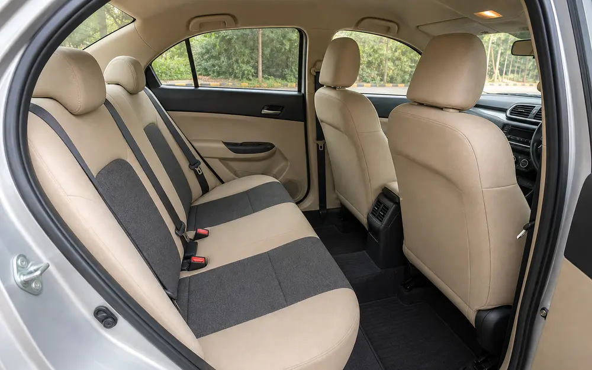
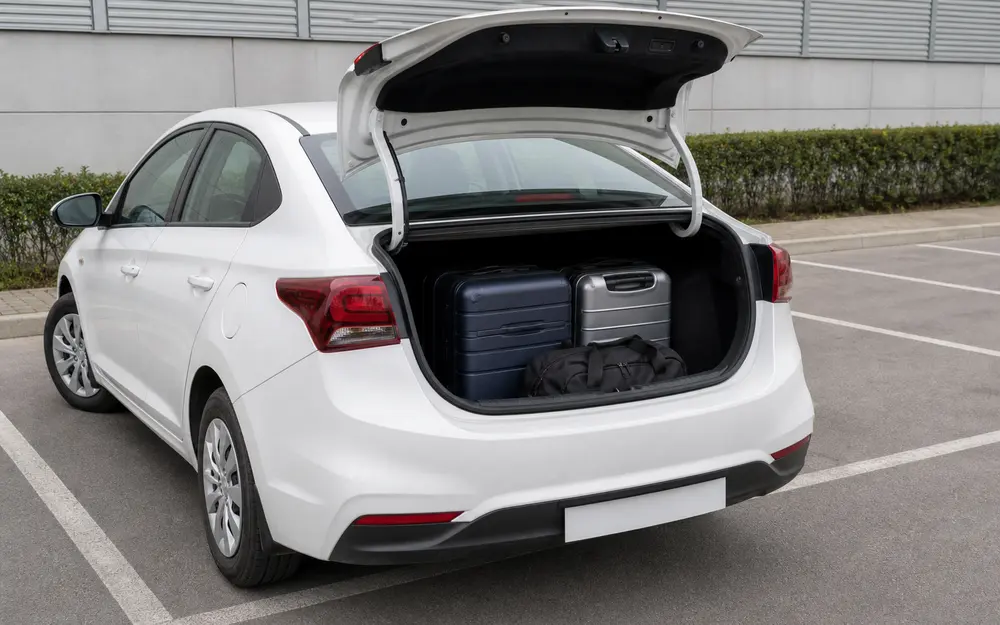
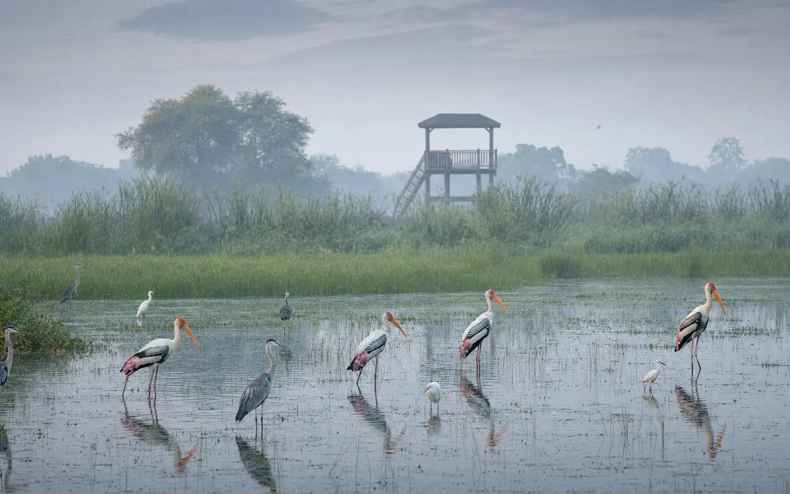
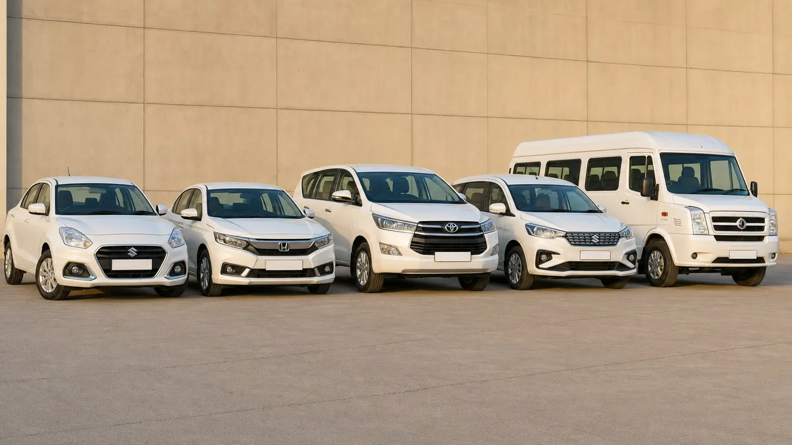

Agra to Jaipur Taxi — Travelling From Agra To Jaipur?
Skip The Cab
Booking Uncertainty.
Private AC Cab
One Way Or Round Trip

One Private Cab From Your Agra Doorstep To Jaipur
Your private cab picks you up from your hotel, station, airport or chosen address in Agra and takes you straight through to Jaipur.
No shared seats, no vehicle changes on the way and no fare surprises when you arrive.
Trusted Agra Taxi Service For The Jaipur Route
~240 KM
Agra → Jaipur
4–5 HRS
Drive Time
ONE WAY
Available
ROUND TRIP
Available
Quick Facts: Agra to Jaipur by Taxi
- Distance from Agra: approx. 235–240 km via NH-21 (also signed NH-11)
- Travel time: 4–5 hours each way, depending on traffic and stops
- Trip type: one-way drop or round trip, your choice
- Route towns: Fatehpur Sikri, Bharatpur, Mahwa, Dausa, Jaipur
- En-route stops: Fatehpur Sikri (~40 km from Agra), Mehandipur Balaji Temple (near Mahwa), Bharatpur
- Pickup: any Agra address — hotel, Agra Cantt, Agra Fort station or Kheria Airport
- Fare: depends on cab type and one-way vs round trip — confirmed on WhatsApp before you book
- Booking: call or WhatsApp +91 87200 81102 — fixed fare confirmed in writing
The Agra → Jaipur Drive
Agra Pickup Ertiga — 6 Seats
Ertiga — 6 Seats Innova Crysta — 7 Seats
Innova Crysta — 7 Seats
Clean AC Interior
Luggage Loaded NH-21 Highway Drive
NH-21 Highway Drive Fatehpur Sikri En Route
Fatehpur Sikri En Route
Bharatpur On The Bypass Sunrise Start From Agra
Sunrise Start From Agra Agra Fort Pickup Point
Agra Fort Pickup PointPickup From Anywhere In Agra
Hotel Pickup
Agra Cantt Pickup
Agra Fort Station Pickup
Airport Pickup (Kheria)
Home / Address Pickup
Clear Fare Breakdown
Everything You Need For A Comfortable Agra–Jaipur Drive
One cab, one driver and one fare from your Agra pickup point all the way to your Jaipur address.
What’s Included In Your Agra–Jaipur Trip
- Private AC Cab
- One-Way Drop
- Round Trip
- Hotel Pickup
- Railway Station Pickup
- Airport Pickup
- Highway-Experienced Driver
- Flexible Breaks
- Driver Details Before Pickup
- Fare Confirmation In Writing
4 CAB TYPES
Sedan to Tempo Traveller
UP TO 15
Seats Available
3 STOPS
Available On Route
FUEL + DRIVER
Included In Fare
Choose Your Cab For Agra To Jaipur
Fixed Fare Confirmed on WhatsApp
4
AC Sedan — Dzire / Amaze
Up to 4 passengers
Fare on WhatsApp
6
Ertiga — AC SUV
Up to 6 passengers
Fare on WhatsApp
7
Innova Crysta — AC SUV
Up to 7 passengers
Fare on WhatsApp
| Cab Type | Seats | One Way | Round Trip |
|---|---|---|---|
| AC Sedan (Dzire / Amaze) | 4 | Fare on WhatsApp | Fare on WhatsApp |
| AC SUV (Ertiga) | 6 | Fare on WhatsApp | Fare on WhatsApp |
| AC SUV (Innova Crysta) | 7 | Fare on WhatsApp | Fare on WhatsApp |
| Tempo Traveller | 12–15 | Fare on WhatsApp | Fare on WhatsApp |
Included In Every Fare
AC vehicle • Fuel • Driver charges
Paid Separately By You
Highway tolls on NH-21 • Any other applicable route charges (at actuals)
We tell you the expected toll total on WhatsApp before you book, and your cab fare is fixed before you travel — no surge pricing and no hidden charges on arrival.
Route and Travel Time
The Agra–Jaipur route runs on NH-21 (signed as NH-11 in parts), a well-maintained four-lane highway for most of the drive. From Agra the road passes Fatehpur Sikri, continues through the Bharatpur bypass, then Mahwa — the turn-off for Mehandipur Balaji Temple — and Dausa before reaching Jaipur. Expect about 4 to 5 hours of driving depending on traffic and how many stops you make.
We pick up from any Agra address: your hotel, Agra Cantt railway station, Agra Fort station or Kheria Airport. A tea, breakfast or temple stop can be planned into the drive — on-route breaks are included, and only a longer detour away from the highway may change the fare, which we confirm on WhatsApp first.
Popular Stops on the Way to Jaipur
Fatehpur Sikri
Emperor Akbar’s UNESCO World Heritage ghost city sits right on this highway, about 40 km from Agra. A 1–1.5 hour stop is easy to add without a major detour. See our Fatehpur Sikri taxi page for details.
Mehandipur Balaji Temple
This well-known Hanuman temple sits just off the same highway near Mahwa, roughly two-thirds of the way to Jaipur. Many travellers combine a Balaji darshan with their Jaipur journey — see our Mehandipur Balaji taxi page.
Bharatpur (Keoladeo National Park)
The Bharatpur bypass lies on this route. Birdwatchers can ask about a short detour into Keoladeo National Park, especially between October and February. See our Agra to Bharatpur taxi page.
A Better Way To Travel Agra → Jaipur
Pickup In AgraBreak At Fatehpur SikriRoom For The GroupAgra → Jaipur, One Comfortable DriveWhy Travel Agra to Jaipur By Private Cab?
Door-To-Door Travel
Picked up at your Agra hotel, station or home address and dropped at your Jaipur address. No terminals, no queues, no last-mile scramble.
No Vehicle Changes
The same car and the same driver take you the full 235–240 km. Nothing to change, transfer or re-book halfway.
Comfortable AC Journey
Four to five hours on the highway is a long stretch. An AC cab with your own seats makes it far easier than a bus or a shared vehicle.
Travel Easily With Luggage
Suitcases stay in the boot from Agra to Jaipur, so a hotel checkout and an onward journey on the same day stays simple.
Drivers Who Know This Highway
Our drivers run the Agra–Jaipur route regularly and know the rest stops, the toll points and the Fatehpur Sikri and Balaji turn-offs.
Better For Families & Groups
Choose the vehicle that fits your group — sedan, Ertiga, Innova Crysta or a Tempo Traveller — instead of splitting across seats.
One-Way Or Round-Trip
Take a one-way drop if Jaipur is your next stop, or a round trip if you are returning to Agra. Both are available on every vehicle.
Fare Known Before You Travel
The fare is confirmed on WhatsApp before you book, with the expected toll total mentioned separately, so nothing is decided on arrival.
Here’s How Your Agra to Jaipur Taxi Booking Works
01 — Share Trip Details
Travel date, pickup point in Agra, passengers and whether you need one way or a round trip.
02 — Choose Your Cab
Sedan, Ertiga, Innova Crysta or a Tempo Traveller for a larger group.
03 — Get The Fare
Your fixed fare is confirmed in writing on WhatsApp before you book, with expected tolls mentioned separately.
04 — Receive Driver Details
Driver name, mobile number and car registration number shared before pickup.
05 — Get Picked Up
Hotel, Agra Cantt, Agra Fort station, Kheria Airport or any Agra address.
06 — Travel To Jaipur
Comfortable highway journey with practical breaks, and any Fatehpur Sikri or Balaji stop planned in.
Nothing is locked in until you have the fare. Tell us your travel date, pickup point and group size on WhatsApp, ask about adding a Fatehpur Sikri or Mehandipur Balaji stop on the way, and we quote before you commit. No app to download and no advance payment for most bookings.
Your Local Agra Travel Partner
- Padma Shree Travels is an Agra-based taxi service running local sightseeing, airport transfers and outstation trips.
- Pickup arranged from hotels, Agra Cantt, Agra Fort station and Agra (Kheria) Airport.
- Fare is confirmed on WhatsApp before you travel — tolls are told to you separately, upfront.
- Driver’s name, number and car number are shared with you before pickup.
- Direct WhatsApp and phone support before and during your journey.
- Easy to extend your trip with Fatehpur Sikri, Bharatpur, Mathura, Vrindavan or a further outstation leg.

Padma Shree Travels
Agra Taxi & Outstation Service
Local Pickup • Clear Pricing • Direct Support
Questions & Answers
How far is Jaipur from Agra?
Jaipur is approximately 235–240 km from Agra via NH-21 (also signed as NH-11). The route passes Fatehpur Sikri, Bharatpur, Mahwa and Dausa before reaching Jaipur.
How long does the Agra to Jaipur taxi journey take?
About 4 to 5 hours by private taxi, depending on traffic, your pickup point in Agra and the breaks you take on the way.
What is the taxi fare from Agra to Jaipur?
The fare depends on the cab type and whether you book one-way or round trip. Message us on WhatsApp with your travel date and we share today’s fixed fare before you book, with tolls mentioned separately.
Are tolls included in the Agra to Jaipur fare?
No. The fare covers the AC vehicle, fuel and driver charges. Highway tolls on NH-21 are paid by the customer at actuals, and we tell you the expected toll total on WhatsApp before you book.
Is a one-way taxi available, or only round trip?
Both are available. A one-way drop to Jaipur suits travellers continuing their trip from there; a round trip suits a day visit or a short Jaipur stay, with the same cab and driver bringing you back to Agra.
Can we stop at Fatehpur Sikri on the way to Jaipur?
Yes. Fatehpur Sikri lies directly on the Agra–Jaipur highway, about 40 km from Agra, and is an easy 1–1.5 hour stop without a major detour. Tell us when booking so the driver plans the stop.
Can we also stop at Mehandipur Balaji Temple en route?
Yes. Mehandipur Balaji Temple is just off the same highway near Mahwa, about two-thirds of the way to Jaipur. Many travellers combine a Balaji darshan with their Agra to Jaipur journey — ask us to plan the stop when you book.
Can you pick me up from my hotel or Agra Cantt railway station?
Yes. We pick up from any Agra address, including hotels across the city, Agra Cantt railway station, Agra Fort railway station and Kheria Airport. Share the address on WhatsApp and the driver reaches you at your chosen time.
What is the road like, and how many toll points are there?
The route runs on NH-21, a well-maintained four-lane highway for most of the way, passing Fatehpur Sikri, Bharatpur, Mahwa and Dausa before reaching Jaipur. There are a few toll plazas along the way, paid by the customer at actuals.
Is the cab suitable for families and senior citizens on this long drive?
Yes. For a 4–5 hour highway drive we recommend the Innova Crysta for extra comfort, and we plan a tea or washroom break en route. Tell us on WhatsApp about any special needs — on-route breaks cost nothing.
When will driver details be shared?
Before pickup you receive your driver’s name, mobile number and car registration number on WhatsApp, so you know exactly who is arriving.
More Routes From Agra
Jaipur to Agra Taxi
Same route, reverse direction, with pickup in Jaipur.
Fare on WhatsAppAgra to Fatehpur Sikri Taxi
On the same highway — an easy day trip from Agra.
From ₹2,500Agra to Mehandipur Balaji Taxi
Just off this highway near Mahwa.
Fare on WhatsAppAgra to Bharatpur Taxi
On the same highway — an easy stop either way.
Fare on WhatsAppAll Outstation Cabs from Agra
Browse every outstation route we run.
View routesRead: Agra to Jaipur Route Guide
Route, timings and the best stops along the way.
Travel GuideReady To Travel From Agra To Jaipur?
Get Your Cab Fare Before You Book.
Send your travel date, pickup location, group size and whether you need one way or a round trip — plus any stop you would like on the way.